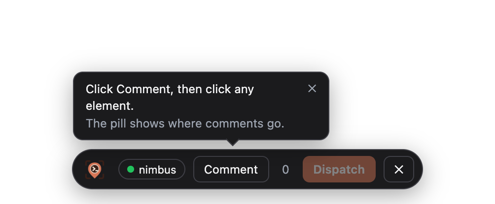
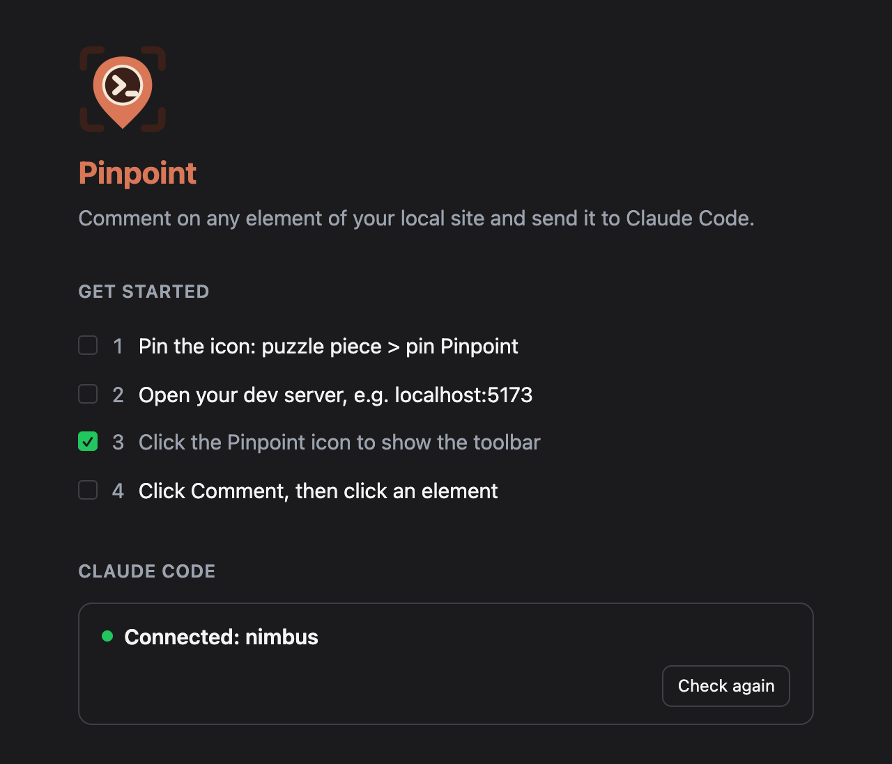
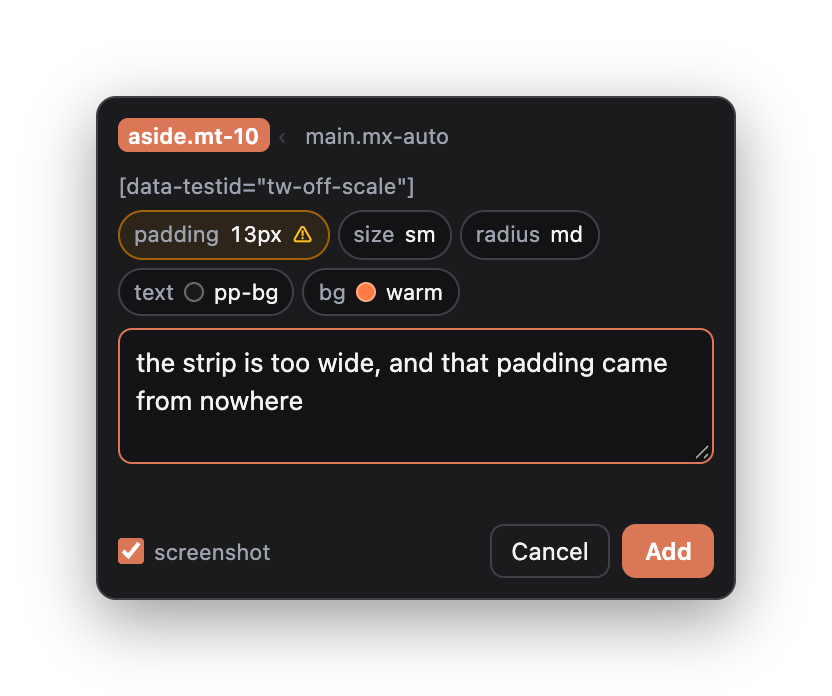
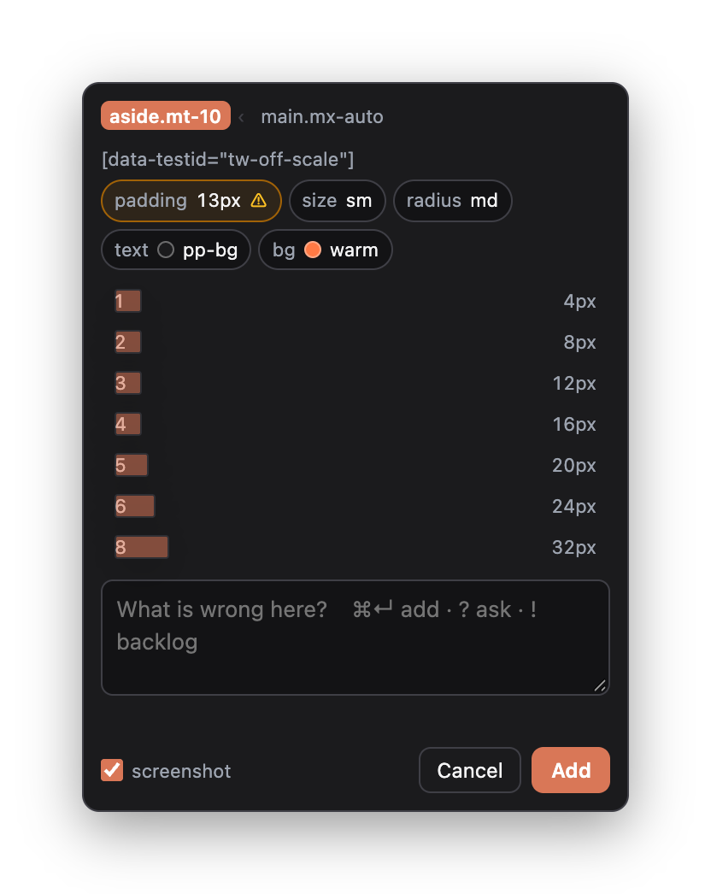
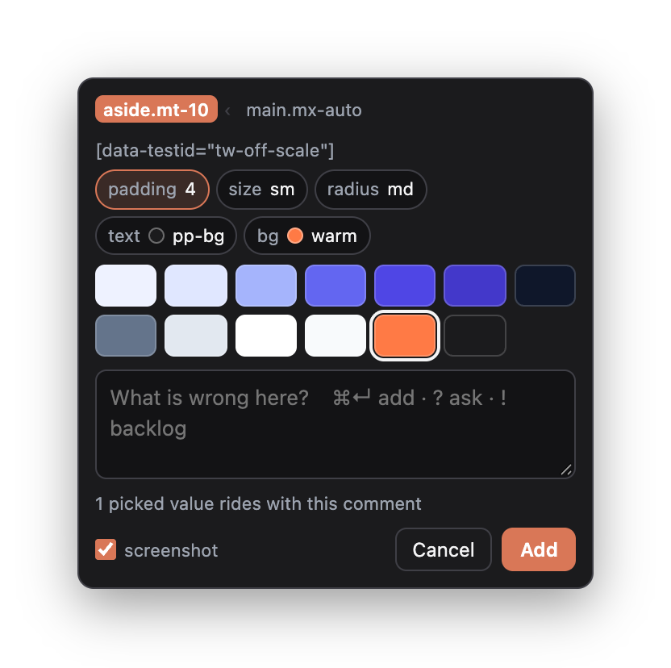
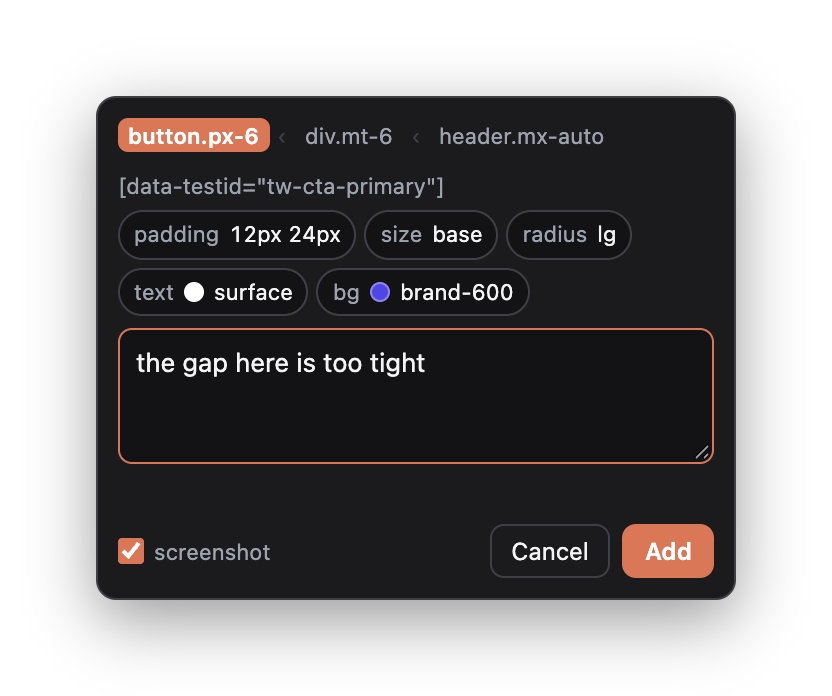
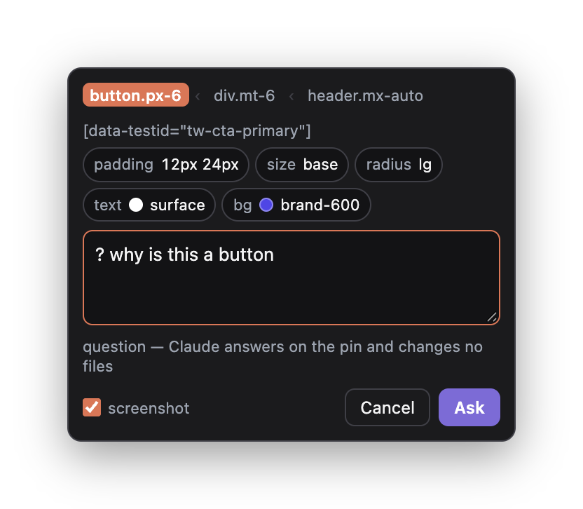
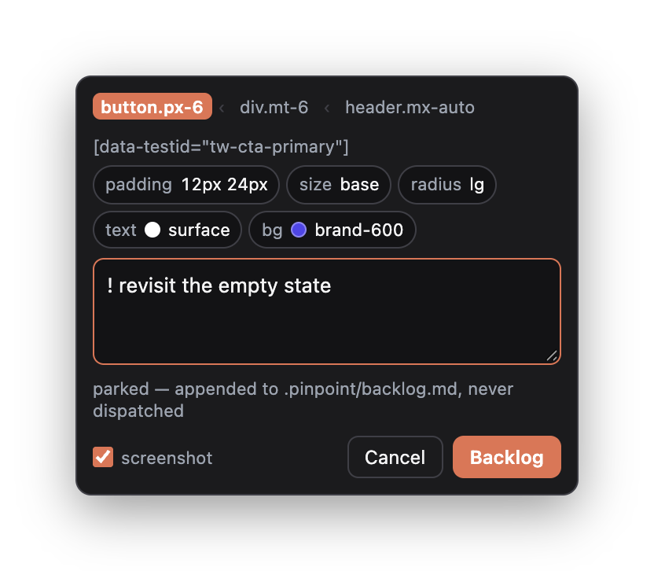
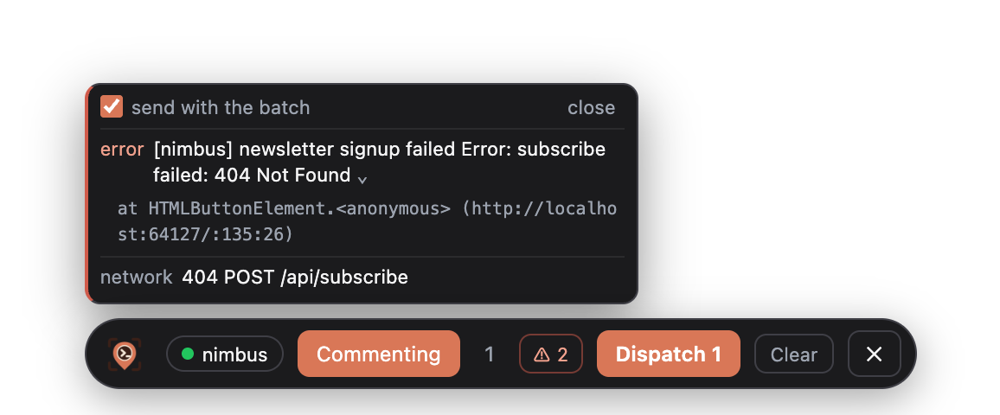
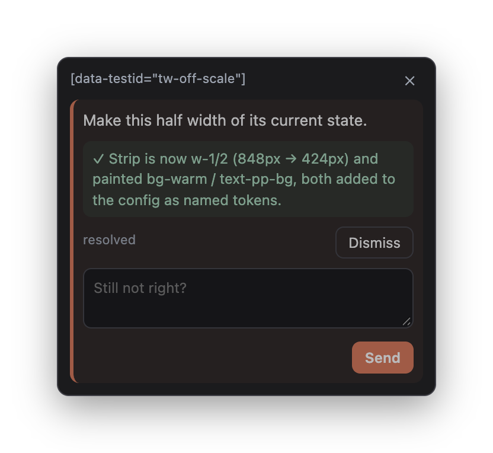

Stop describing the fix.
Hand it over.
0.1 carried the element. 0.2 carries the intent: the value you actually want in the project's own vocabulary, whether the comment is a request or a question, the state that only existed while a menu was open — and what the page logged while you were looking at it. 0.3 makes it easy to start and easy to trust: a welcome page, a pill that says where comments go, and a doctor for when they do not arrive. 0.4 and 0.5 make it hold up: answers that survive a restart, a design system that stays current while the model edits it, and project files that two sessions can write at once.
Nine features, new in 0.2
Picked values
Choose from the project's own scale instead of describing a number.
02Token vocabulary
Tailwind, shadcn, Chakra, MUI, or plain CSS variables — read from your config.
03Off-scale flags
A value that belongs to no scale is marked before you write the note.
04Questions
? gets an answer on the pin and changes no files.
Backlog
! parks it in your repo instead of dispatching it.
Freeze frame
Pin a hover menu or a toast that removes itself.
07Selection depth
Walk from the span you clicked to the card you meant.
08Page errors
What the page logged, with the stack, sent once per batch.
09A closed loop
Progress, follow-up rounds, and fixes verified against a fresh crop.
Know where your comments are going
The toolbar starts hidden in a new tab, and the icon shows it. It then stays open in that tab, through reloads, until you close it. The first time it appears, a tip points at Comment. A pill on the toolbar names the project that receives Dispatch: your project's folder, Choose when several sessions are open, Offline when none is. Click it to pick a session for that port.
Comments go to the Claude Code session whose folder holds the page's dev server, not to whichever session happened to start the bridge. When the session holding the bridge closes, another takes over.
A welcome tab opens once after install, with four steps and a live check of the
bridge; How it works in the pill's popover opens it again.
/pinpoint:setup copies the extension to a stable folder, so an update
needs only Reload in chrome://extensions, and
/pinpoint:doctor prints a pass or fail list with one fix for each
problem. If the bridge and the extension are on different versions, the pill gets a
small ! and the popover says what to run. Nothing is blocked.


It keeps working when things change
Answers survive. A reply, a resolved comment and a progress line are saved with the batch. The page asks the bridge for them when it loads, when the tab gets focus, when the bridge comes back and every 30 seconds. A restart of the bridge, a sleeping extension worker or a missed event no longer loses an answer.
The right session. When two sessions share a project, a dispatch goes
to the one that started last. /pinpoint:setup and
/pinpoint:doctor report what the browser really has installed.
A design system that stays current. The bridge fingerprints the config and theme files it read. When the model edits one, the next pick uses the new scale after a background refresh. Refresh design system in the pill's popover does it on demand, and the composer says when the data may be out of date.
Safe writes. Screenshots are written without blocking the bridge, and a
failed write leaves no half batch. The backlog and the history take a lock and replace
the file in one step, so two sessions can write them together.
npm run check gates the code for contributors.
It works from the keyboard and with a screen reader
One stop for the toolbar. Alt+Shift+P shows the toolbar and
puts the keyboard on it. Tab also reaches it after the page. The toolbar is a single
tab stop: the left and right arrows move between its buttons, Home and End jump to
the ends, and Tab moves on.
Pins are buttons. When there are pins, the toolbar shows Pins with a count. Press Enter or the down arrow on it to go to the first pin. The arrows walk the pins from the top of the page down, Enter or Space opens the card, and Tab leaves. Each pin is read by its number, kind, state and note, for example "Pin 3, change request, working: Increase the card padding".
Escape always says where you land. From a card you go back to its pin, from a pin to Pins, from the composer to Comment, and from the project popover to the pill. From the toolbar you go back to where you were on the page.
Heard as well as seen. Dispatches, answers, resolved comments and errors are read aloud without moving focus. Keyboard focus has a visible ring. The overlay follows reduced motion and Windows high contrast, and at 200% zoom every button stays on screen.
Say which elements a picked value is for
Apply to. Once you pick a value from a chip, the composer shows an Apply to list with a count beside each choice: Only this, Same classes, Same component role, Same container and Every h3 (or whatever the tag is). It always starts at Only this. One choice covers every value picked in that comment; for two different groups, write two comments. Notes you type are not affected.
What each one means. Same classes is the same tag with exactly the same classes, so a title with one extra class is left out. Same component role is the same tag rendered by the same React or Vue component; it is not offered when the page has no component names, when they are minified, or when the page takes longer than 250 ms to answer. Same container is the same element in every copy of a repeated container, such as the title of each card, and is not offered when that is ambiguous. A choice that finds the same elements as one above it is not repeated.
See it before you send it. Hovering a choice, or reaching it with the keyboard, outlines its elements. Choosing it previews the picked values on all of them, and Cancel, Escape or Add puts the page back. If some of them use another value today, the composer says so, for example "1 of 3 matches currently uses a different text colour". Counts are for the current page only; hidden elements are counted separately. A group of 200 or more reads 200+: you can still choose it, but it is not previewed. On a frozen frame only Only this is offered.
From the keyboard. The choices are radio buttons: Tab reaches the chosen one, the arrows change it, and the new choice is read out with its count and any warning.
What the session is told. The comment arrives with the group: which choice, the selector hint, the count, and any values that differ inside it. The session is told that the group is a set of elements seen on this page, not a rule in your code: it has to find the class, component or rule that draws them and change that once, rather than edit each element, and say so if it cannot. Only this adds nothing to the comment. A parked comment keeps its group, and so does a follow-up on it.
Update the plugin too. Apply to needs the 0.7 plugin as well as the 0.7 extension. With an older plugin the list stays hidden and picked values apply to the one element, as before, because an older plugin would quietly drop the group. A comment that already has a group is held back with a message instead of being sent as Only this.
Pins follow the route of a single-page app
Each route keeps its own pins. When an app changes screen without a
page load, through the history API or the hash, the pins of the old route leave and the
new route's pins appear. Nothing in the app needs changing: Pinpoint never wraps
history.pushState, it notices the URL change. An open composer is closed
when the route changes, and an unsent note in it is discarded.
What counts as a route. The path, plus a hash that looks like a path:
#/users and #!/users are routes, and any
?query inside such a hash is not part of it. The query string
(/users?id=1), anchors (#install) and state in the hash
(#by=line&play=week) are not routes, so changing them keeps the same
pins. Paths are taken as the browser gives them: /users and
/users/ are two routes.
What the marks mean. Pins on one route can come from different URL
states, such as /users?id=1 and /users?id=2, so a pin is only
attached when the element it finds is shown to be the same one. On the URL where it
was written, the selector and tag are enough. On another URL state the element also
needs the same text, or with no text the same id, test attribute or accessible name. A
pin that passes there gets a dotted ring and the words created on another URL
state. One that does not is detached: dimmed and dashed, left where the
element last was. Its card shows the URL it was written on. Screen readers hear both
in the pin's name, and the card says them in words.
Two tabs, one route. Every comment has a stable id. Saving merges by id with what is already stored, so two tabs on the same route keep each other's comments, and a removed comment does not come back from a tab that had not heard about it yet. The other tab updates straight away. Pins saved by an older version are moved to their route the first time the page opens.
See what needs you on this page
An Inbox on the toolbar. When the page has comments, the toolbar shows Inbox after Pins. Its badge counts the comments that need you, not every comment: an answer or an edit you have not looked at yet, a comment marked resolved or a backlog item marked done since you last looked, a dispatch that failed, a backlog item that could not be written, and a pin whose element is gone from the URL it was written on. Pending comments, work that is under way and things you have already seen add nothing. Screen readers hear the count in the button's name, for example "Open Pinpoint inbox, 2 items need attention".
One list for the page. The panel lists this route's comments in groups: Needs attention first, then Not dispatched, In progress, Parked and Recently done, at most 50 in each. Every row shows the pin number, whether it is a change, a question or parked, its state, the start of the note and the element. An answer is shown in full under its row.
Go to the pin, or mark it seen. Choosing a row closes the panel, scrolls the pin into view, puts focus on it and opens its card, where removing, retrying and replying work as before. A pin whose element is gone opens its card by the toolbar. Mark seen clears an answer, edit or resolution from the badge without leaving the panel. Opening a pin's card counts as seeing it; opening the list does not. A failed dispatch stays until a dispatch succeeds, and an unsaved backlog item until Retry works or it is removed. Two tabs on the same route share what you have seen.
From the keyboard. Inbox is a toolbar button like the others. Enter opens the panel with focus on the first row, the up and down arrows move through it, Home and End jump to the ends, and Escape closes it and returns to Inbox. Comments on other routes are not listed yet.
Pick the value instead of describing it
"a bit more padding" is a negotiation. Click the element and Pinpoint reads what it actually computes — padding, size, radius, colours — then offers the scale your project already defines. Pick one and it previews on the real element, in place, before you have written a word.
What travels is the decision, not the adjective: padding → p-8. The note becomes optional, because a picked value is already a complete request.
Clicking a chip opens the selection bar underneath it — the scale for that property, and nothing else. There is no free-text field and no colour wheel, which is the point: the only values on offer are ones the project already has a name for.

padding 13px is ringed in amber because 13 is on no scale
this project defines; bg warm is not a hex code, because the project
names that colour.


It speaks your vocabulary
The bridge reads the project's own config — Tailwind, shadcn, Chakra, MUI, or plain CSS custom properties — and the page reports what it actually resolved at runtime. A fix comes back as a class or a token, not as raw px and hex.
And flags what is off it ⚠
A value that belongs to no scale is marked on the chip. On a 4px grid, a 13px padding is a fact rather than an opinion — and it arrives already named as the bug rather than as something to preserve.
### [20260822-142925-zujg#1] the strip is too wide - requested change — width: 848px → w-1/2 · background: #f43f5e → bg-warm - selector: `[data-testid="tw-off-scale"]` - box — size: 848×87; padding: 13px ⚠ off the 4px scale, nearest 3 (12px), 4 (16px)
Three things a comment can be
A comment box that only ever means "change this" forces everything else through the wrong door. One character at the front of the note picks the door, and the button relabels itself so you can see which one you took.
| You type | Button | What happens |
|---|---|---|
the gap here is too tight |
Add | Dispatched as a change request. Files get edited. |
? why is this a button |
Ask | Claude answers on the pin and changes no files. |
! revisit the empty state |
Backlog | Appended to .pinpoint/backlog.md. Never dispatched, never expires. |



The backlog is a real file in your repo, reachable from the session with
list_backlog, start_backlog_item, and
finish_backlog_item — so parking something is not the same as losing it.
Pin the thing that is no longer there
Freeze the frame ⌥⇧F
Hover menus, dropdowns, toasts that remove themselves after three seconds. Freeze paints the page as it was and lets you pin into the still, so the state survives the trip to the toolbar. The comment arrives marked as captured from a frozen frame — the selector may be stale and the screenshot is the evidence.
Walk to the right node ↑ ↓
You clicked a span; you meant the card. The breadcrumb walks the ancestor chain, and everything downstream — selector, component name, highlight, and the crop the screenshot is taken from — follows the level you land on.
Every comment now also carries the element's computed styles, its parent chain, and the component that rendered it — read out of the React or Vue internals in the page's own world, because a content script cannot see them.
What the page logged, not what the console shows
A probe runs in the page's own world from the first byte and keeps a small ring buffer of console errors, uncaught exceptions, failed rejections, and failed requests. When it has something, a ⚠ appears on the toolbar next to Dispatch. Open it and the entries are printed — click one to unfold the stack that names the file and line.
It sits on the toolbar rather than in the comment card on purpose. These belong to the page, not to any element on it: a fetch that 404s on one button is not evidence about a different button you happened to pin afterwards. So it is stated once, for the batch.

⚠ 2 sits next to Dispatch because that is what it changes. The newest
entry is first: the error the page logged, unfolded to show the stack that names
the file and line, and under it the 404 that caused it.
Dispatch is the middle of the story, not the end
It tells you it started
report_progress puts a line on the pin while the work happens — "working",
then "edited" with the files that changed. Outcomes only; the transcript stays in the
terminal where there is room for it.
The fix is checked against a fresh crop
Resolving asks the page for a new picture of the same element and reads it back. The question is whether the change landed, not whether the diff looked right — and a fix that did not land is reported as such instead of being quietly closed.
Not right? Same pin, next round
A follow-up reopens the comment rather than duplicating it, and carries what was asked and what was done into the next attempt. A second pin on the same element would claim the first request was abandoned — it was answered, just not well enough. Capped at three rounds, because a long argument belongs in the session.
And it is written down
Every batch and every outcome is appended to .pinpoint/history.md in your
repo. The queue is pruned after a day; the log is not. Nothing reads it back — it is
there for you.

## 2026-08-22 - 14:29 · 20260822-142925-zujg · 1 on http://localhost:3000/fixtures/tailwind/ - · #1 Make this half width of its current state. — `[data-testid="tw-off-scale"]` - 14:30 · ✓ 20260822-142925-zujg#1 — Strip is now w-1/2 (848px → 424px) and painted bg-warm / text-pp-bg, both added to tailwind.config.js as named tokens.
What Claude can call
| Tool | Does |
|---|---|
list_comments | The pending batch, rendered as a brief. |
report_progress | Puts a status line on the pin. Never closes anything. |
resolve_comment | Closes a pin and returns a fresh crop of the element to check against. |
reply | Answers a question on its pin, or sends a status line to the toolbar. |
list_backlog | What was parked instead of dispatched. |
start_backlog_item · finish_backlog_item | Work a parked item without hand-editing the file. |
What it still will not do
Localhost only — http://localhost and http://127.0.0.1, by
manifest, not by preference. No build step, no bundler, no account. The bridge binds to
127.0.0.1 and nothing leaves the machine. Screenshots land as real files in
the queue directory and are pruned with the batch.
It cannot read CSS syntax errors — no browser exposes those to a page script — and it cannot see what other extensions log, because those run in isolated worlds of their own.